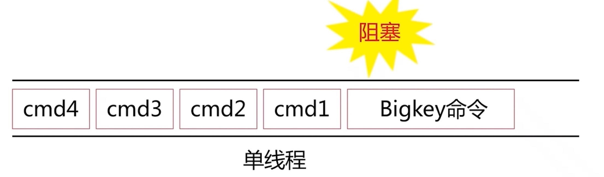

键值设计
- 可读性和可管理性
- 以业务名（或数据库名）为前缀(防止 key 冲突),用冒号分割比如业务名表名，比如ugc:video:1
- 简洁性
- 保证语义的前提下，控制 key 的长度，当 key 较多时，内存占用也不容忽=
- 不要包含特殊字符 反例：包含空格、换行、单双引号以及其他转义字符
内部编码
- embstr

- raw
- int
Value设计
拒绝bigkey
- string 类型控制在 10 KB 以内
- hash、list、set、zset 元素个数不要超过 5000
- 网络阻塞

- 集群节点数据不均衡

- Rediss阻塞
- 频繁序列化：应用服务器 CPU 消耗

- 慢查询

发现bigkey
- 应用方的发现
- redis-cli --bigkeys 建议在slave节点
- scan + debug object
- 主动报警：网络流量监控，客户端监控
- 内核热点key问题优化
- 建立堆

bigkey删除
- 注意隐性删除

- 过期事件删除导致阻塞，不会在主节点慢查询日志，在从节点慢查询有
- lazy delete
- 通过scan 进行子删除
bigkey预防
- 优化数据结构
- 优化数据结构：例如二级拆分
- 物理隔离或者万兆网卡：不是治标方案
- 命令优化：例如 hgetall-~ hmget、scan
- 报警和定期优化
bigkey总结
- 牢记 Reds 单线程特性
- 选择合理的数据结构和命令
- 凊楚自身OPS
- 了解 bigley 的危害
选择合适的数据结构
键值生命周期
- Redis不是垃圾桶
- idletime
- 周期数据需要设置过期时间，object idletime key可以找垃圾 key-value
- 过期时间不宜集中：缓存穿透和雪崩等问题
命令优化
- O (N）以上命令关注 N 的数量 例如：hgetal、lange、smembers、zrange、sinter 等并非不能使用，但是需要明确 N 的值。有遍历的需求可以使用 hscan、sscan、zscan 代替。
- 禁止线上使用 keys、flushall、flushes 等，通过 redis 的 rename 机制禁掉命令，或者使用 scan 的方式渐进式处理。
rename-command FLUSHALL ""
rename-command FLUSHDB ""
rename-command CONFIG ""
rename-command KEYS ""
- 合理使用select
- redis事务弱 不支持回滚
- 集群版本（自研和官方）要求一次事务操作的 key 必须在一个 slot 上（可以使用 hashtag 功能解決）
- redis集群版本在lua上有特殊要求
- 必要使用monitor命令，不能长时间使用

客户端优化
- 避免多个应用使用一个redis实例
- 不想干的业务拆分